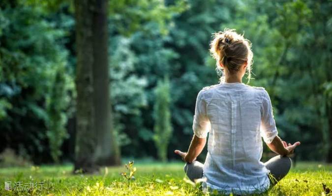
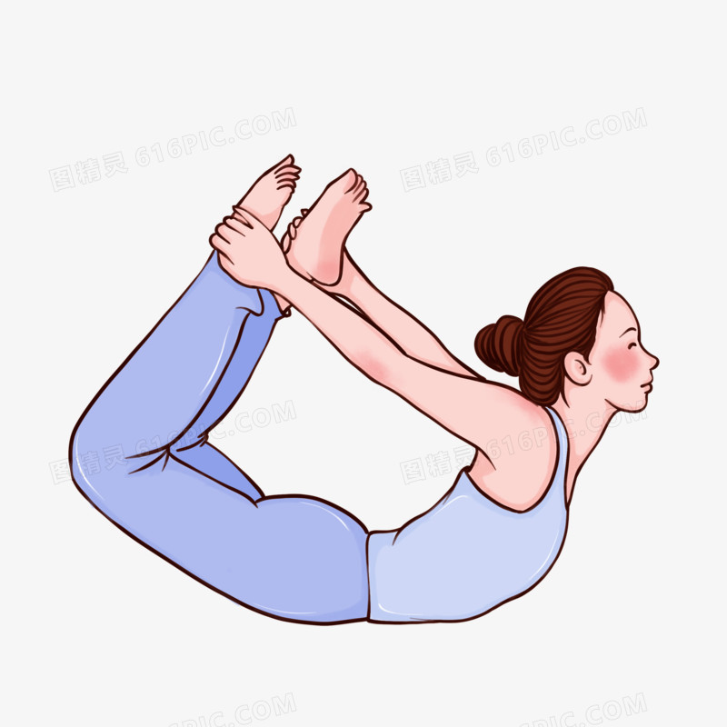
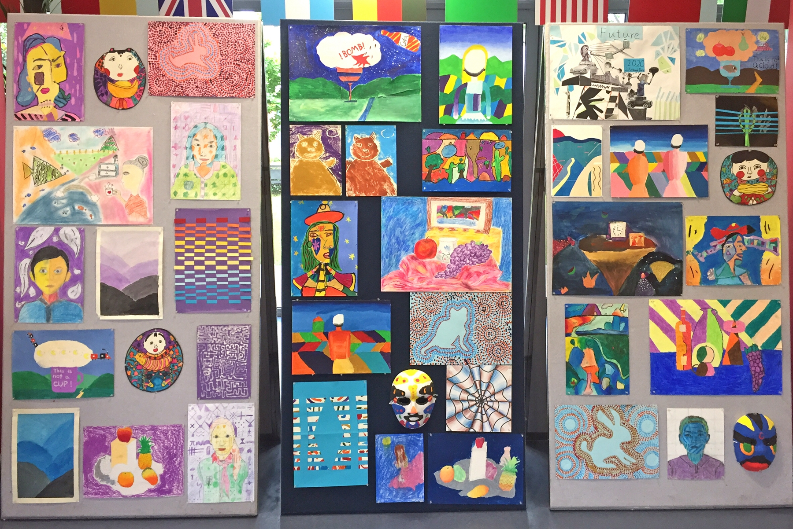
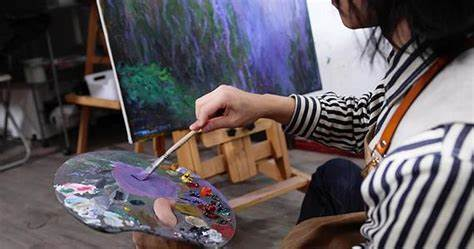
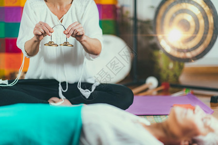
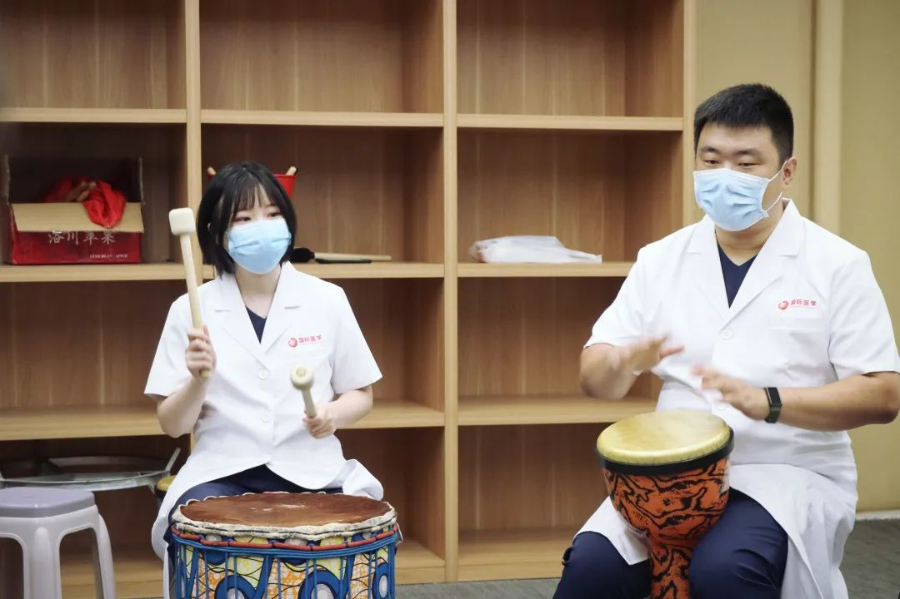
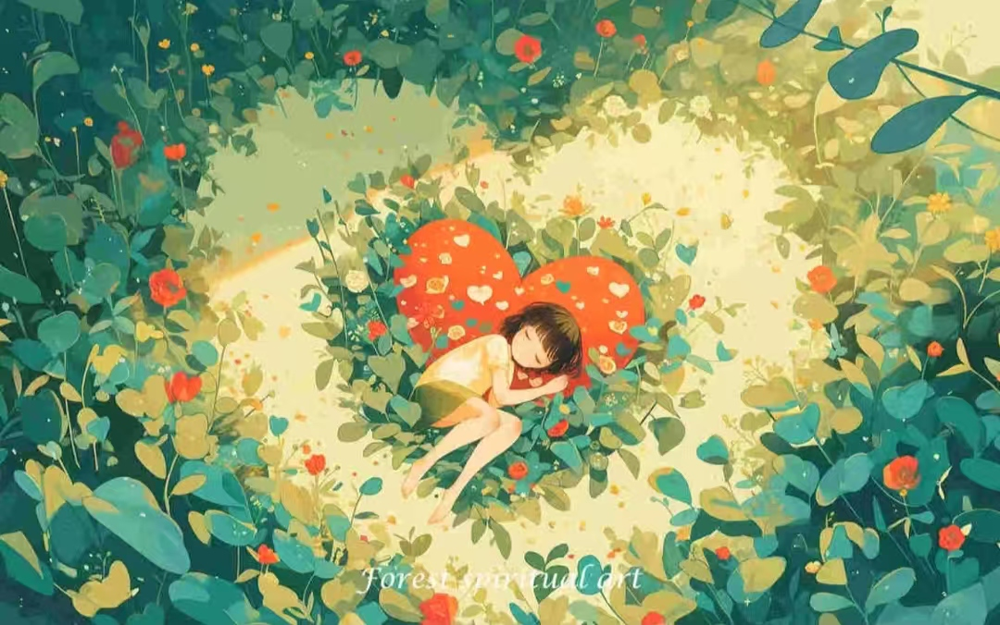

每日一句
有些鸟儿注定是关不住的，它们的每一片羽毛都闪耀着自由的光辉。
—— 肖申克的救赎
心理小贴士
- 学会倾听自己的内心
- 保持积极乐观的心态
- 适当运动释放压力
放松音乐
轻音乐 - 森林之声
大自然的治愈旋律
心治愈之旅

冥想与正念练习
通过引导式冥想和正念练习，帮助你放松身心，提和情觉察能。
冥想练习建议：
- 选择安静、舒适的环境
- 固定时间培养习惯
- 从短时间开始，逐渐延长
- 保持耐心和温和的态度
- 不要期待立即见效
常见问题解答：
- Q: 走神怎么办？
A: 温和地觉察到走神，将注意力重新带回呼吸 - Q: 什么时候练习最好？
A: 清晨或睡前是较好的时间，保持规律最重要 - Q: 姿势不舒服怎么办？
A: 可以适当调整，重点是保持脊椎挺直
呼吸冥想
10分钟
呼吸冥想指导：
- 找到舒适的坐姿
- 将注意力集中在呼吸上
- 观察呼吸的自然节奏
- 让思绪如云般飘过
正念冥想
15分钟
正念练习要点：
- 保持当下觉知
- 不带评判观察
- 接纳所有感受
- 温和地回到当下
"春有百花秋有月，夏有凉风冬有雪。"
—— 白居易

放松训练
渐进式肌肉放松训练，帮助缓解身体紧张和压力。
放松训练简介：
渐进式肌肉放松训练是一种科学有效的减压方法，通过有意识地绷紧和放松不同的肌肉群，帮助我们缓解身心压力，改善睡眠质量。
放松技巧：
- 从头到脚逐步放松每个肌肉群
- 保持均匀的深呼吸节奏
- 感受肌肉的紧张与放松变化
- 保持平和的心态和专力
- 每天坚持练习15-20钟
练习步骤：
- 找一个安静、舒适的环境
- 采取舒适的坐姿或躺姿
- 闭上眼睛，深呼吸几次
- 按顺序放松各个部位：
- 面部肌肉
- 肩膀和颈部
- 手臂和手部
- 胸腹部
- 腿部和脚部
- 结束时慢慢活动身体，睁开眼睛
注意事项：
- 练习时保持环境安静
- 穿着舒适的衣物
- 不要强迫自己
- 保持耐心和规律性
- 如有不适及时停止
"死亡是个凉爽的夜晚，活着是个喧嚣的白日。"
—— 泰戈尔


艺术疗法
通过艺术创作和表达，帮助你放松身心，找到内心的平静。
艺术疗愈建议：
- • 涂鸦与绘画：随意画出内心的感受
- • 艺术日记：用图画记录每天的心情
- • 曼陀罗绘画：专注绘制对称图案
- • 拼贴艺术：收集和拼贴喜欢的片
- • 彩色冥想：选择颜色表达情绪
- 画笔成为灵的语言，用色彩诉说内心的故事...


音乐疗法
通过音乐疗法，帮助你放松身心，找到内心的平静。
推荐音乐：
- • 轻音乐：《River Flows in You》- Yiruma
- • 自然音：《Forest Rain》- 大自然的声音
- • 钢琴曲：《Kiss the Rain》- Yiruma
- • 治愈系：《Always With Me》- 久石让
- 多听听你喜欢的音乐吧，让心灵找到属于自己的节奏...
写作疗法
通过写作疗法，帮助你放松身心，找到内心的平静。
每日练习提示：
- 注意自己的内心对话
- 识别消极想法
- 尝试用积极的方式重新表达
- 每天记录感恩
生活智慧指南
人际关系处理
- • 学会倾听：真诚地关注他人的表达
- • 情绪管理：控制自己的情绪，理解他人的感受
- • 边界意识：学会合理设置和维护个人边界
- • 有效沟通：表达清晰，避免误解
- • 同理心：站在他人角度思考问题
职业发展规划
- • 自我认知：了解自己的兴趣和能力
- • 目标设定：制定短期和长期职业目标
- • 技能提升：持续学习，保持竞争力
- • 资源整合：建立职业发展所需的人脉网
- • 职业规划：设计适合自己的职业路径
生活小技巧推荐
- • 时间管理：高效规划日程安排
- • 健康饮食：均衡营养，规律作息
- • 运动习惯：坚持适度运动
- • 财务管理：合理规划支出和储蓄
- • 环境整理：保持整洁有序的生活空间
治愈系书籍推荐
- • 《被厌的勇气》 - 岸见一
- • 《活出生命的意义》 - 维克多·弗兰克
- • 《自我关怀的力量》 - 克里斯汀·内夫
- • 《幸福的方法》 - 泰勒·本-沙哈尔
- • 《当下的力量》 - 埃克哈特·托利
心理学基础知识
- • 认知行为理论基础
- • 情管理的科学方法
- • 压力应对的心理机制
- • 人格发展的基本理论
- • 心理健康的评估标准
人成长指南
- • 建立积极的思维方式
- • 培养良好的学习习惯
- • 提升自我认知和觉察
- • 发展个人兴趣爱好
- • 设定并实现个人目标
心理健康测试
通过专业的心理测试，了解自己的心理状态
